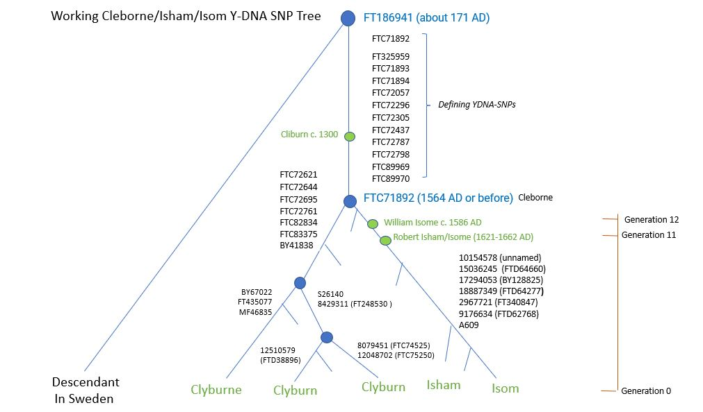

Robert Isham/Isome 1621 - 1662
Robert Isham/Isome 1621 - 1662
Ancestor of Ishams and Isoms in Northamptonshire and Utah
 Robert Isham/Isome 1621 - 1662
Robert Isham/Isome 1621 - 1662
Ancestor of Ishams and Isoms in Northamptonshire and Utah
The Y-DNA haplogroup for Robert and his patrilineal descendants is R-FTC71892. The common ancestor of all individuals in this haplogroup had a surname similar to "Cleborne" and lived in England the era 1394 - 1625 AD. This is consistent with our knowledge that Robert's paternal grandfather was James Cleborne (1564-1625).
An eleventh-generation patrilineal descendant of Robert is a Y-DNA match with 23 other individuals with the following surnames that are variants of Cleborne:
The following Y-DNA SNPs are probably unique to descendants of Robert Isham/Isome 1621-1662:
 This is a working version of the Cleborne / Isham / Isom SNP tree.